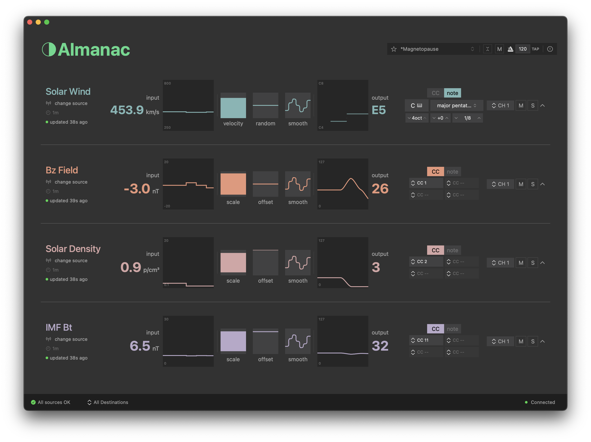
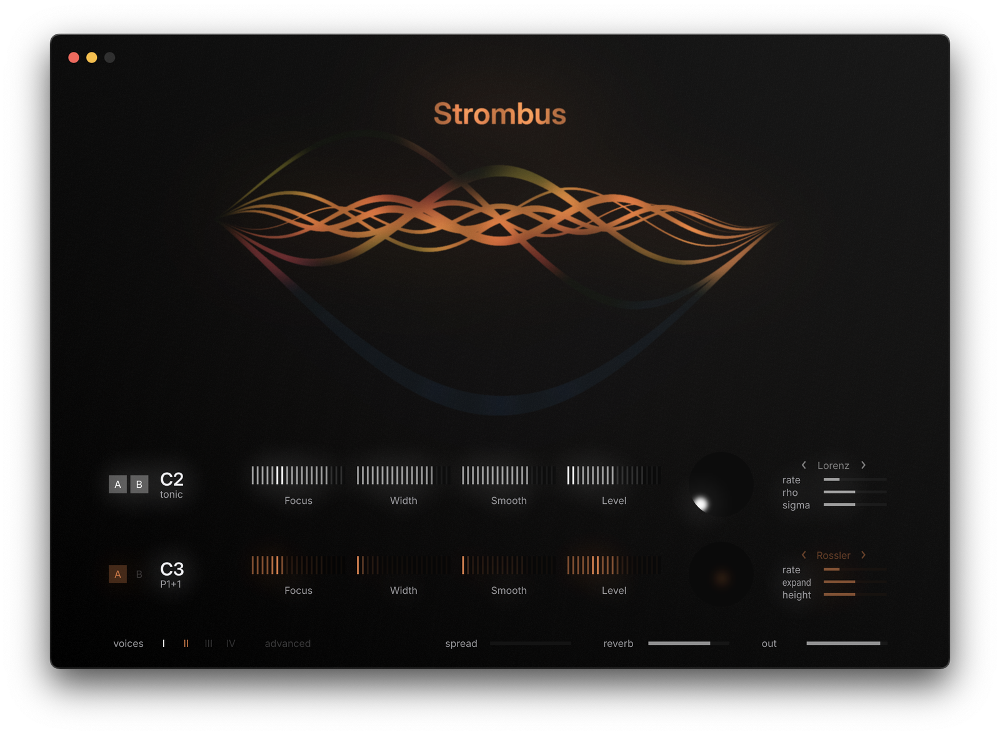
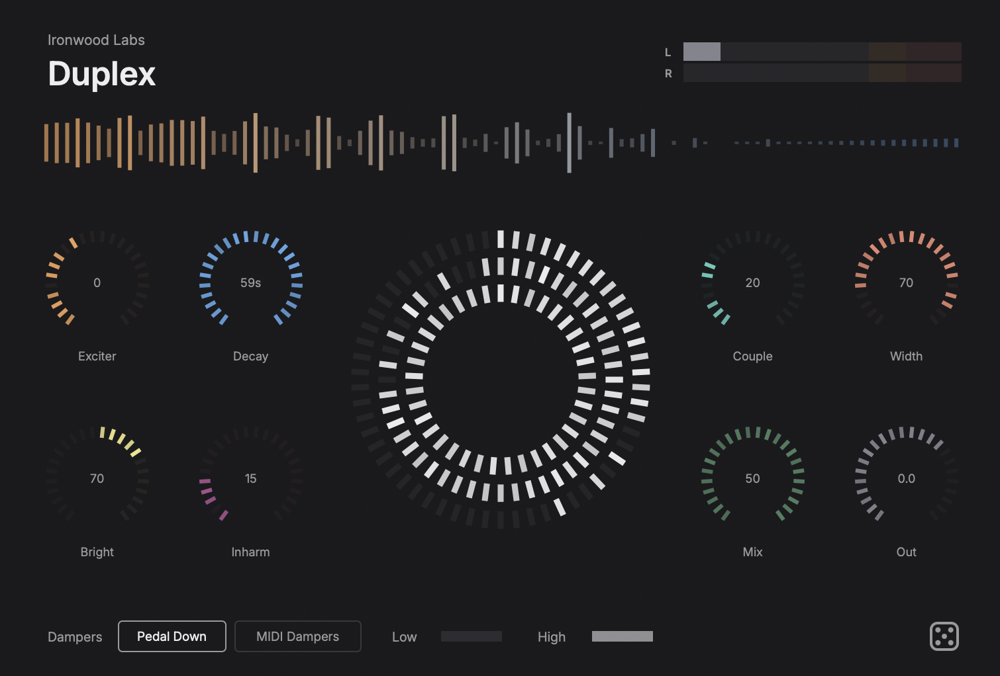
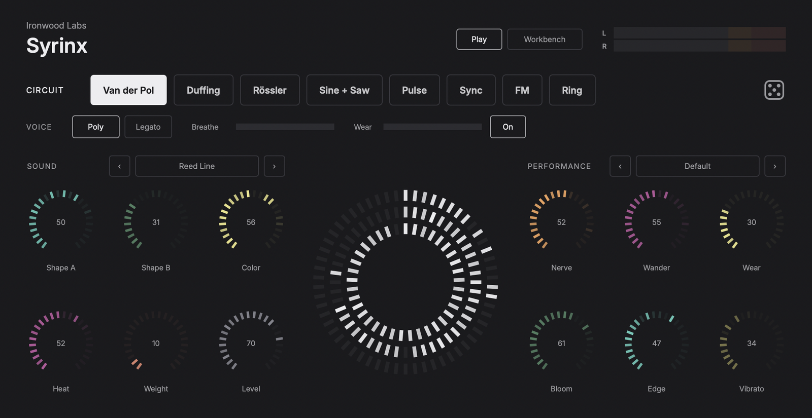
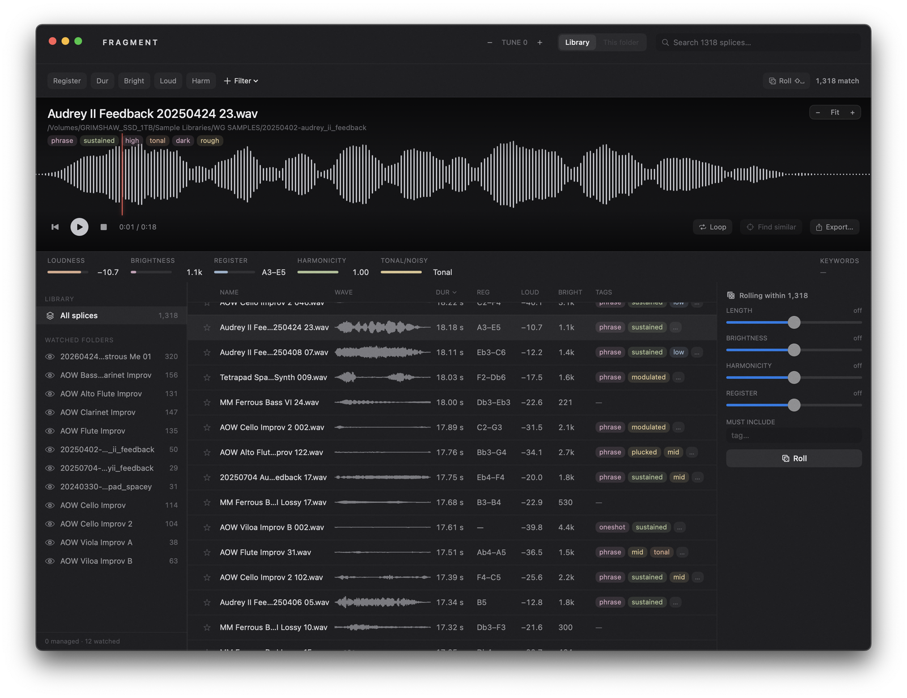
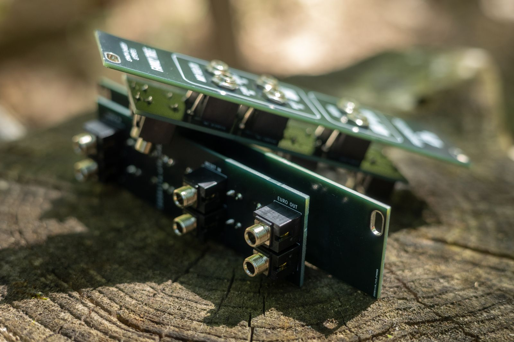

Almanac
Data → MIDI
A utility that routes live data streams into MIDI for composition and performance.
Software, modular hardware, and small studies in sound. Built quietly and shipped when ready.

A utility that routes live data streams into MIDI for composition and performance.

A synthesizer built around two harmonic oscillators and slow chaotic modulation. Standalone and plugin.

88 undamped piano strings that ring in response to whatever you feed them. AU, VST3 and Standalone.

A synthesizer played with breath, built so that no two notes come out the same.

Cuts long improvised recordings into individual gestures, trained on how a composer actually splices, then lets you browse the results as a library.

A small family of Eurorack modules, designed and assembled with Steve Travale.